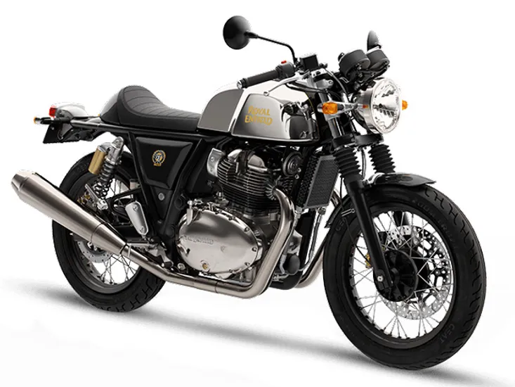

The Royal Enfield Continental GT 650 is a café racer that combines retro aesthetics with modern engineering.
Its distinctive design features a sculpted fuel tank, clip-on handlebars, and rear-set footpegs for a sporty
riding position. Powered by a 649cc, air/oil-cooled parallel-twin engine, it produces 47 bhp and 52 Nm of
torque, mated to a six-speed gearbox with a slipper clutch. Dual-channel ABS, Pirelli tires, and an advanced
chassis ensure a stable and engaging riding experience, making the Continental GT 650 a perfect blend of
style and performance.